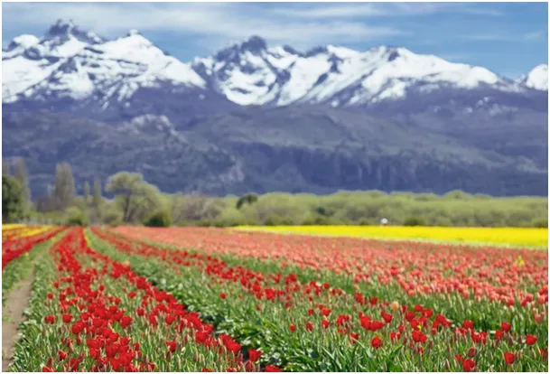
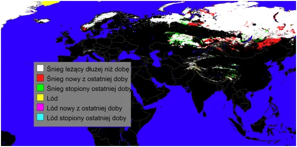
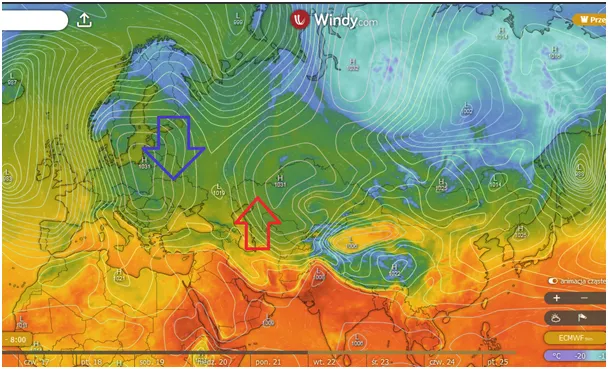
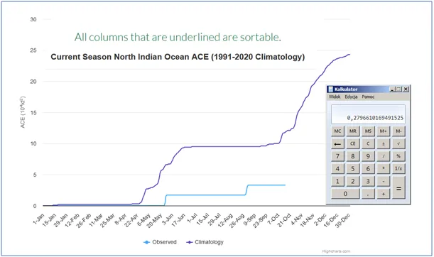
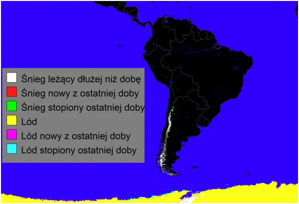
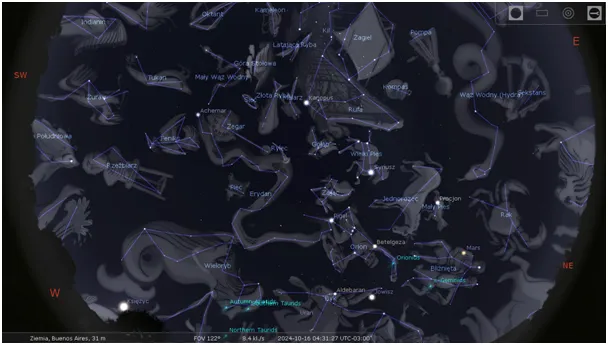

Dopiero zaczynamy poznawać naszą planetę
Połowa października za nami. Dosypało w południowej Skandynawii i w południowej Syberii przy granicy z Chinami. W środkowej Azji odwilże dzięki wyżowi niosącemu przez Persję ciepło z Oceanu Indyjskiego.

Ten ocean w tym roku przyniósł zaledwie 28% energii cyklonów co zwykle, co świadczy o jego niskiej temperaturze i dla Azji oznacza szybką zimę.

Pomiary satelitarne dają tylko szczątkowe dane o temperaturze powierzchni wody, nic nie mówią nam od tym, co metr i głębiej pod powierzchnią. Jeśli mamy wietrzną pogodę to pofalowany ocean jawi się jako chłodniejszy niż ten przy flaucie, gdy woda powierzchniowa się nie miesza z tą głębiej. Mimo potężnych technologii dopiero zaczynamy poznawać naszą planetę.

Wiosna w górach Argentyny przypomina nam, że na południowej półkuli jest wszystko odwrotnie,

Słońce świeci z północy, a na nocnym niebie widać pół Kosmosu, którego nie widać z naszej półkuli.

Szelf lodowy Antarktydy zaczyna się topić, ale nie zapominajmy, że przez ostatnią dekadę szybko rośnie, co zbadali niemieccy naukowcy za nasze pieniądze. Ściągam z USA dane od 2013 roku, więc wkrótce zrobię z tego raport i się dowiemy, czy niemieckie badania mówią coś innego niż amerykańskie. Tymczasem zapraszam na moją bezpieczną, szyfrowaną stronę, gdzie jest już blisko pół tysiąca felietonów i raportów, a każdy poparty gruntowną wiedzą pokoleń wybitnych uczonych i twardymi źródłami. Poniżej info jak można wesprzeć moją pracę.
Paweł Klimczewski